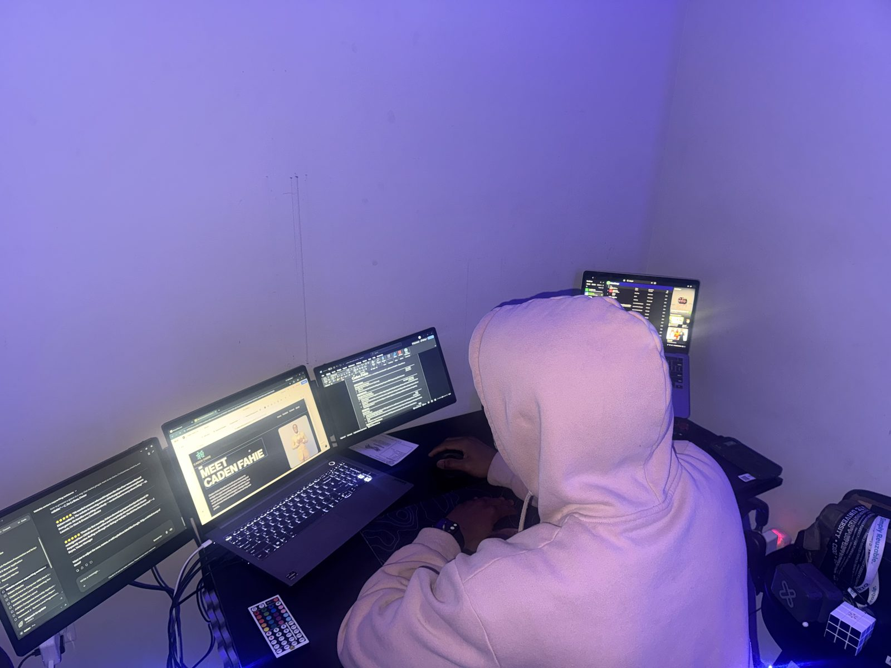
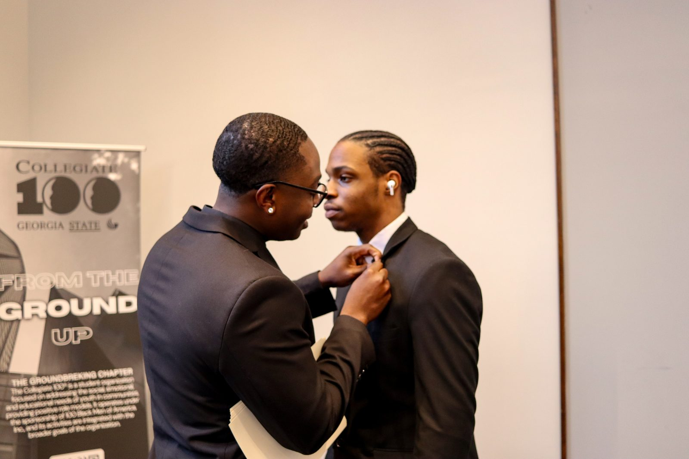
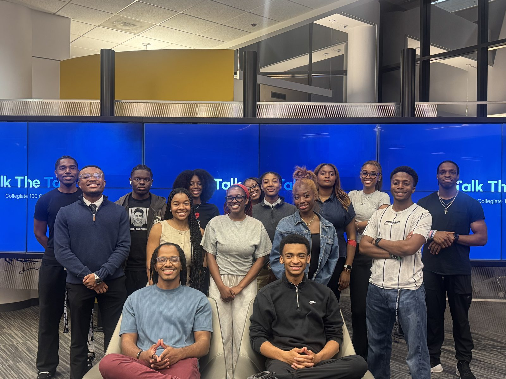
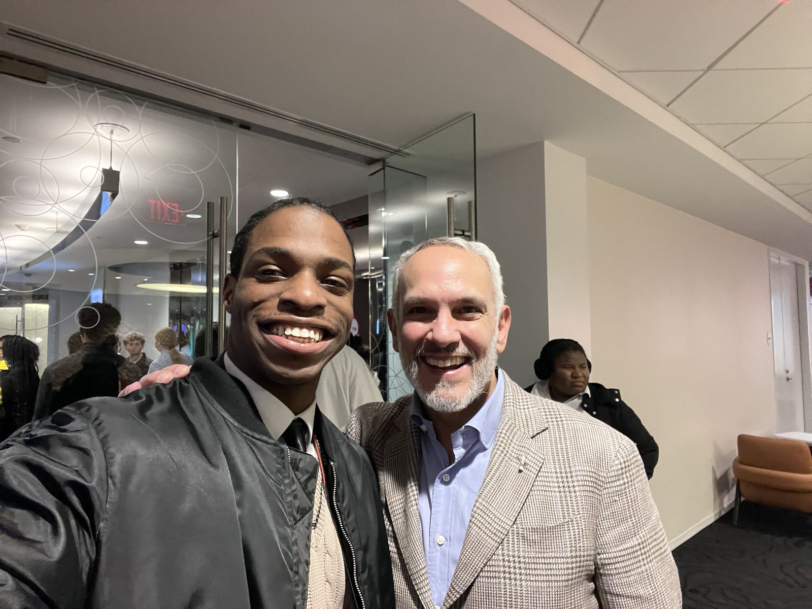
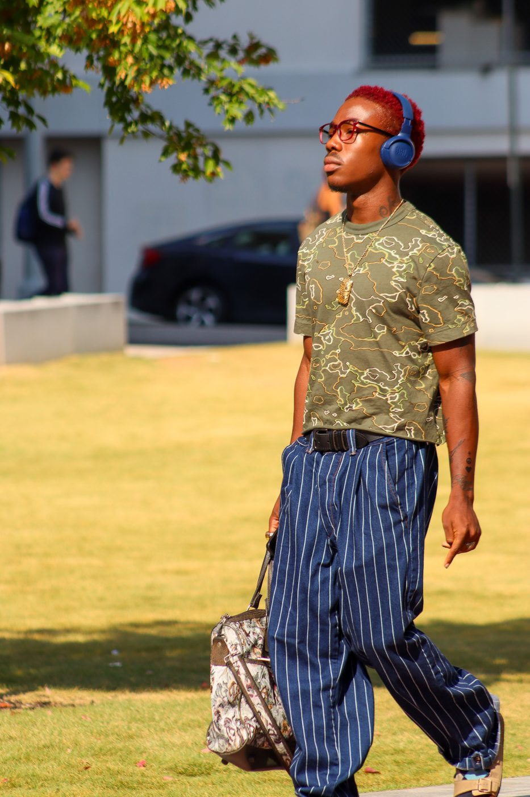
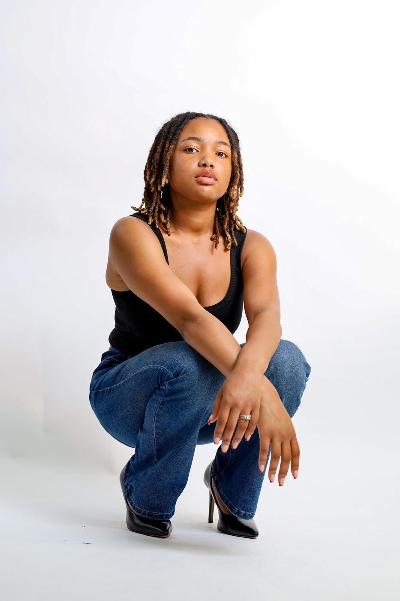
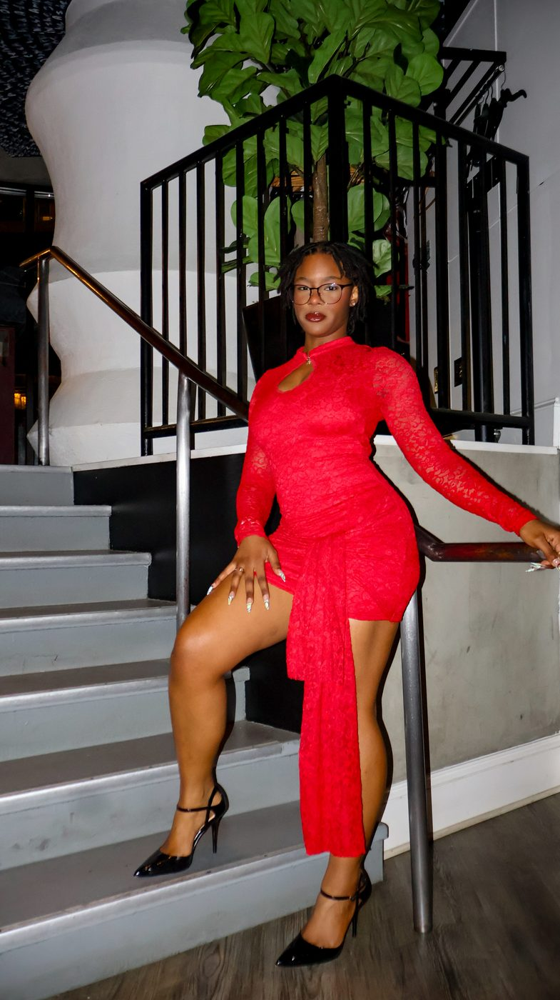

Caden reads a project like a room — quietly and completely. By the time he starts building, half the problem is already solved.
MR
Dr. M. Ramírez
Professor · Computer Science
I'm Caden Fahie — a student technologist and creative director. I build precise, accessible software and craft calm, cinematic visuals. Yin and yang, working in balance.
Systematic thinking, technical depth, and civic responsibility. The half that ships, tests, and stands up for people.
Composition, light, rhythm, restraint. The half that sees a moment and turns it into a memory.
Told less in paragraphs, more in frames. Scroll through the moments that shape how I think and make.
I'm a student technologist and creative director working at the intersection of engineering, leadership, and visual craft. What you'll see below are the moments that continue to shape both halves of the practice.

TechnologyMy first love was the quiet certainty of code — the discipline of naming, structuring, and shipping. I study CS with a focus on interface design and infrastructure that stays out of the user's way.

LeadershipFrom student government to environmental initiatives, I've learned that leading is largely about listening well and reducing friction so a group can do its best work.
"Structure is a form of care."

SustainabilityI organize around sustainability and campus advocacy because the same systems thinking that improves an interface can improve a community.

CreativeWhen I put down the keyboard I pick up a camera. Light on a face, a hand in motion, a room settling into evening — the visual work keeps the technical work honest.
Choose one discipline, or hire both halves for a project that lives on the seam between engineering and art direction.
Modern, accessible sites built with fast, maintainable code and content models that a team can actually own.
System-driven layouts and interaction patterns that scale from a landing page to a full product surface.
Second opinions on architecture, tooling, and hiring — with a bias toward calm systems over clever ones.
Practical, warm-hearted help with hardware, cloud accounts, and everyday troubleshooting for small teams.
Setting the tone, taste, and rhythm of a project — from mood boards to final delivery.
Portraits, event coverage, and brand imagery that reads as calm, cinematic, and specific to the subject.
Short films, recap edits, and product spotlights that put pace and restraint above spectacle.
Naming, positioning, and voice work that translates the founder's belief system into a coherent identity.
Editorial layouts, event collateral, and social systems that stay legible at every size.
Content pillars, calendar, and asset production — designed to feel like the brand, not the algorithm.
Progress reflects how comfortable I am shipping production work in each stack — not certificates on a shelf.
A few of the organizations, initiatives, and roles I've held. Expand any card to see the role, impact, and skills built along the way.
Advocated for student needs across academics, policy, and campus life. Co-authored two initiatives on transparent budget reporting and student mental-health access.
Helped launch and run campus programs focused on waste reduction, renewable literacy, and outdoor stewardship. Built partnerships with local nonprofits.
Coordinated logistics and creative assets for community-facing events. Designed print collateral, ran run-of-show, captured coverage photography.
Serve on cross-functional committees bridging students, faculty, and staff. Focus on tech literacy, digital accessibility, and student communication tools.
Contribute writing, design, and strategy to advocacy campaigns on equity, mental health, and student safety. Combine research, empathy, and clear visual language.
Collaborators, mentors, and organizational leaders on what it's like to build with me.
Caden reads a project like a room — quietly and completely. By the time he starts building, half the problem is already solved.
Rare mix of technical rigor and visual taste. He'll ship a system and then hand you a portrait that makes the team feel seen.
He leads by lowering the temperature of a room. People say more, decisions come out better, work ships faster.
Every asset Caden delivered fit the brand and the moment. He also over-delivered on quiet things — captions, alt text, file naming.
A cross-section of photography, brand, product, and motion. Hover any piece for context.



Currently taking a small number of design, development, and creative-direction projects. If you have a problem worth thinking clearly about, I'd love to hear it.